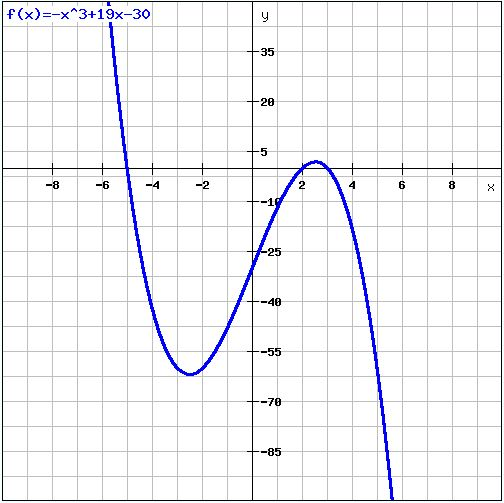

Functions
Functions take inputs, and based on the input evaluates an output.
Functions are represented normally by F(x), but the letter before (x) can be anything (ex. G(x), H(x))
Example:
F(x) = x2 + 3
To evaluate the function at x = 3, just plug in 3 for x
F(3) = 32 + 3 = 12
More complex problems may invovle functions within other functions
Example:
F(x) = x2 + 3
G(x) = 4x - 3
H(x) = F(G(x))
In this case, to evaluate H(x) at x = 3, you must first evaluate G(3)
G(3) = 4(3) - 3 = 9
Then, you plug the result, 9, into F(x)
F(9) = 92 + 3 = 84
H(3) = 84
Graphing Functions
When graphing functions, set y = F(x)
Example:
F(x) = 7x - 5
y = 7x - 5
The Sat may ask specific questions about the graph of a certain function

Maximms / Minimums
To find maximum values, look for the largest y value on the graph - Same approach for minimums, but looking for the smallest y value on the graph
In this graph, the maximum occurs at x = -5.8, and the minimum is at x = 5.8
Zeros
The SAT may also ask for zeros of a specific function. To find zero's, just look for where the function crosses the x axis (y = 0).
In this case, the zeros of the function are at x = -5, 2, and 3